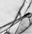

ALTINCI BÖLÜM
SESSİZLİĞİN TEDAVİSİ
1984 Sonbaharı

405 GÜNEY OTOYOLU’NA DÖNMEYİ BEKLERKEN kahvemi sabitleyip radyonun kanallarıyla oynamaya başladım. İşime gidiyordum ve trafik henüz sabahın 7’sinde tıkanmıştı. Mulholland Drive üstgeçidinin yakınındaki tepeye vardığımda dikiz aynasından geride uzanan San Fernando Vadisi’ne baktım. Santa Ana rüzgârları her zamanki sis ve pusu dağıtmıştı ve manzara çocukluğumdaki kadar güzeldi. Tek fark, şimdi daha az çiftlik, daha çok bina olmasıydı.
Boston’daki psikiyatri ihtisasımdan sonra Los Angeles’a dönmekten çok mutluydum. Eski dostlara ve aileye yeniden kavuşmak harikaydı. Mezun olduğum UCLA’da şimdi geriatrik psikiyatri bölümünde görev yapıyordum. Yaşlılara yönelik psikiyatri burada henüz yeni başlıyordu ve ben de bu konuda önemli bir ihtiyaç olduğunu görmüştüm. Sıkça akıl karışıklığı yaşayan ve ihmal edilen, çok sayıdaki tıbbi rahatsızlığı yüzünden karmaşık birer vaka olan yaşlılarla çalışmaya gönüllü genç psikiyatrların sayısı pek fazla değildi.
Ayakta tedavi gören genel hastalarım ve konsültasyon pratiğim yavaş yavaş gelişirken, geriatrik alanda klinik araştırmamı yapılandırmaya başlamıştım. Ancak bu benim için hiç de sandığım kadar kolay bir geçiş olmuyordu. Harvard’daki üç yılımda ülkenin dört bir yanından başvuran en iyiler arasından özel olarak seçilmiş, elit bir grubun stajyerlerinden biriydim. Orada kendimi kanıtlamış, isim yapmıştım. UCLA da saygın bir kuruluştu ama çok büyüktü ve şimdi yine engin bir denizde isimsiz, küçük bir balıktım. Meslektaşlarımı tanımak ve güvenlerini kazanmak biraz vaktimi alacaktı.
UCLA Tıp Merkezi en az Harvard Mass General Hospital kadar hareketliydi ama Los Angeles’ın kendisi gibi tıp merkezi de daha geniş alana yayılmış bir yapıdaydı. 1953’te inşa edilen UCLA Tıp Merkezi erken dönem modern mimarinin en iyi örneklerinden biri sayılıyordu. Tuğladan yapılma 11 katlı ana hastane binası ile okulun birbiriyle kesişen yarım düzine kanadı, yukarıdan bakıldığında bir ızgara düzeni oluşturuyordu. Pencerelerin üstündeki paslanmaz çelikten yatay havalandırma panjurları bizi ısıdan ve gün ışığından koruyordu ama içeriden bakınca parmaklığı andırıyorlardı. Güneşin yönüne bağlı olarak da bazen hapishanede çalışıyormuşuz görüntüsü ve hissi yaratıyorlardı.
Dördüncü kat hemşire bölümünde sabah konsültasyonu notlarımı yazıyordum ki upuzun doğu-batı koridorundan çınlayan bir ses geldi. Sonra nörolojiden bir grup asistan doktorun, uzman doktor Ralph Porter’ın peşinden, sabah kontrolü dâhilinde bir hastanın odasından çıktığını gördüm. Porter hastadaki inme ve hematom hakkında ahkâm kesiyordu. Kendisi, cevaplayamayacaklarını bildiği sorular sorarak asistan doktorları aşağılamaktan zevk alan, gürültücü çokbilmişlerden olduğu için, dikkatimi notlarıma vermekte zorlanıyordum.
Grup, hemşire bölümünün yanında toplaştı ve Porter nöroloji birinci sınıftan utangaç bir asistan doktora, az sonra görecekleri hastayı anlatmasını söyledi. Kız tereddütle konuşmaya başladı. Kendine güvenmediği her halinden belliydi. Tam da Porter’ın dişine göre…
Los Angeles’ın güneyindeki hareketli ve sanata meraklı sahil kasabası Venice’ten gelen genç ressam Heather Phillips’i anlatıyordu. Heather bir ay önce gribe yakalanmış, kız kardeşi tarafından yerel hastaneye yatırılmıştı. Hasta orada dilsiz ve tepkisiz hale gelmişti. Omurilikten su alındığında beyin omurilik sıvısında lökoside rastlanmıştı. Bu da menenjit, ensefalit veya başka türde bir beyin enfeksiyonuna işaret ediyordu. Hastaya damar içi antibiyotik tedavisi uygulamışlardı ama iyileşme görülmediği için doktorlar hastalığın viral olduğuna karar vermişti. Hasta yine tepkisiz kalınca UCLA’ya sevk edilmişti. Heather’ın nörolojik muayenesi, sorulara ya da talimatlara sözel veya fiziksel tepki vermemesi dışında normaldi.
Bu vakada bir gariplik var gibi geldi bana. Hastada beyin enfeksiyonu varsa neden o kadar hızla ve uzun süre konuşamaz olmuştu? Neden zihni bir açılıp bir kapanmıyor, sanrılı bir süreçten geçmiyordu? Ayrıca neden nörolojik muayenesinde diğer her şey normaldi? Menenjit hastalarında genelde boyun sertleşmesi olurdu.
Ekip koridordan Heather’ın odasına doğru ilerlerken Dr Porter’a yetiştim ve onlara katılıp katılamayacağımı sordum. Porter yaka kartıma bakıp küçümseyerek güldü. “Psikiyatrist ha? Olur tabii, neden olmasın? Belki bu sayede hastanın çocukluğundaki hangi travma yüzünden beyin iltihabı geçirmekte olduğunu anlarız.”
Alaycılığı duymazdan geldim. “Elimden geleni yaparım Dr Porter.”
Hep birlikte Heather’ın odasına doluştuk. Hasta pencere kenarındaki yatakta, başı dikleştirilmiş olarak yatıyordu. Diğer yataksa boştu. Muhtemelen 30’lu yaşlarındaki bu ince, soluk, esmer kadının yüzünde boş bir ifade vardı. Porter onun yanına giderek kendini tanıttı. Hastaya ismini sordu ama hiçbir yanıt alamadı. Nerede olduğunu bilip bilmediğini sordu, yine tepki yok. Birkaç oryantasyon sorusu denedikten sonra üstünkörü bir nörolojik muayene yaptı.
Refleks çekicini çıkarıp Heather’ın reflekslerini kontrol etti. Refleksler güçlü ve simetrikti. Ardından hareket erişimini ve esnekliği kontrol etmek için hastanın üst kolunu sabit tutarak alt kolunu ileri geri hareket ettirdi. Sonunda asistan doktorlara dönerek vakayı özetlemesi için bir gönüllü istedi. Tedirgin genç nörologlardan biri ensefalitin ayırıcı tanısını anlatırken benim gözüme tuhaf bir şey takıldı. Heather’ın kolu hâlâ havada, Porter’ın bıraktığı yerdeydi. Görünüşe bakılırsa bunu benden başka fark eden de yoktu. Asistan doktor Porter’ı etkilemeye çalışarak bir şeyler gevelemeye devam ederken, ben Heather’ın kolunun neredeyse gözle ayırt edilemeyecek kadar yavaş bir biçimde aşağı inişini izledim.
Hayal mi görüyordum acaba? Neden başka kimse görmüyordu? Şimdi söylesem kafadan çatlak olduğumu mu düşünürlerdi? Porter aniden bana döndü. “Dr Small, bu sunum sizi mest etti sanki. Hastanın rahatsızlığının ardında yatan bilinçdışı motivasyonu keşfedebildiniz mi?”
Bu adam psikiyatristlerden hoşlanmıyordu, orası kesin. Acaba kendisi ne gibi tuhaf kişisel sorunlar barındırıyordu? “Daha değil, doktor. Ama sakıncası yoksa formal bir konsültasyon yapmak isterim.”
Porter güldü. “Tabii, buyurun. Aslında dişçiyi de çağıralım, bakalım o ne bulacak.” Gruptan bir-iki kişi kıs kıs gülerken, ben yüzümün kızardığını hissettim. Nefret ediyordum yüzümün kızarmasından.
Porter bu psikiyatri karşıtı yaklaşımında yalnız değildi. 1980’lerin başlarında pek çok dâhiliyeci ve cerrah psikiyatriye çok az değer verirdi. Psikiyatriyi anlamazlardı, hastalar da akıl hastası diye damgalanmaktan korkardı. Tıp fakültesindeyken arada bir öğrencilerden ya da profesörlerden birinin, bilimden çok spekülasyona dayalı etkisiz bir uzmanlık olduğunu söyleyerek psikiyatriyle dalga geçtiğini duyardım.
İhtisas dönemimde bu önyargıların nedenleri hakkında daha fazla bilgi sahibi oldum. İskoç psikiyatr R. D. Laing kanıtlanmış fiziksel bir nedeni olmadığına göre, akıl hastalığının bir hastalık olarak kabul edilip edilmemesi gerektiğini sorgulamıştı. Ona göre delilik kavramı politik ve kişiler arası etkilerden doğmuştu.
1973’te Stanford’lu psikolog David Rosenhan psikotikmiş gibi davranan üniversite öğrencilerinin psikiyatri tesislerine nasıl giriş yaptığını anlatan “Deli Yerlerde Aklı Başında Olmak Üstüne” adlı kitabını yayınladı. Bu yalancı hastalar, hastaneye yatırıldıktan sonra delilik taklidini bıraktıkları halde normal davranışları hastane çalışanları tarafından psikoz belirtileri olarak algılanmıştı. İlginç olan, asıl yatılı hastaların bunu gayet iyi bilmesiydi.
II. Dünya Savaşı’ndan sonra pek çok tıp okulunun psikiyatri bölümünde psikanaliz -bir zihin araştırması ve tedavisi teorisi- hüküm sürdü. Freudyen psikanalizde hastalar serbest çağrışımlarını, fantezilerini ve rüyalarını analistlerine anlatır. Ardından analist hastanın semptomlarına veya problemlerine yol açtığını varsaydığı bilinçdışı çatışmaları yorumlar. Hasta analistin yorumuyla içgörü kazandığında semptomlarda genelde iyileşme görülür. Ancak bu, günlük tedavilerle bile, yıllarca sürebilir ve tabii son derece pahalıya mal olur ve çok vakit alır.
Psikanaliz pek çok insana nevroz ve kişisel problemler konusunda yardımcı olmuştur. Ancak sistematik çalışmalar benzeri bir tedavi yaklaşımı olan psikodinamik psikoterapinin etkinliğini kanıtlamış olsa da, psikanalizin sadece anlayışlı ve destekleyici biriyle konuşmaktan daha iyi işlediğini bilimsel olarak kanıtlamak zordur. Ayrıca psikanaliz herkes için uygun da değildir. Özellikle de şiddetli depresyonu veya psikozu olan hastalar için uygun olmaz. Zihinsel semptomları genelde daha hızlı iyileştiren antidepresanların ve antipsikotik ilaçların geliştirilmesiyle birlikte tıp camiası psikiyatriye biraz daha ısınır gibi oldu. Öte yandan pek çok psikiyatr da sadece psikanalitik yaklaşımlar kullanmak yerine, daha eklektik bir stratejiye geçerek, konuşma terapisi ile ilaçlı tedaviyi bir arada kullandı. Psikiyatrinin bu şekilde tıbbileştirilmesi, diğer tıp disiplinlerinin bu dalı daha güvenilir bulmasını ve kabullenmesini sağladı. Ne var ki psikiyatri karşıtı tutumlar, özellikle de yaşı daha ileri olan hekimler arasında varlığını sürdürdü.
Pek çok doktorun ve halktan insanın psikiyatriye karşı önyargısının ardında korku yatar. Kendi zihinsel çatışmalarının inkârı içinde olan insanlar kimi zaman gizli psikolojik sorunlarının fark edilmesini önlemek için psikiyatristlerden kaçınır veya onlara saldırırlar. Sanki psikiyatristin böyle bir şeyi yapacak sihirli gücü varmış gibi…
Ancak Ralph Porter’ın durumunda psikiyatri karşıtı iğnelemeler şahsi bir meseleymiş hissi uyandırıyordu bende. Oysa ben resmi psikiyatrlığıma yeni yeni başlıyor, ciddiye alınmak istiyordum. Porter’ın bana kendimi bir anda güvensiz hissettirebilmek gibi bir özelliği vardı. Psikiyatri karşıtı oklarını üzerime yönlendirdiğinde itiraf etmeliyim ki bir an için kariyer tercihimden şüpheye düşmüştüm. Neyse ki bu düzeysiz insana öfkem, güvensizliğime baskın geldi ve kendimi ona kanıtlamaya itti beni. Ortalık yerde küçük düşürülmenin de kendine özgü bir avantajı vardı, insanı görüşlerini kanıtlamaya itebiliyordu.
ERTESİ SABAH RESMİ KONSÜLTASYONUMA başlamak için Heather’ın odasına gittim. Televizyon açıktı ve Heather boş boş ekrana bakıyordu. Ona kendimi tanıttıktan sonra yatağın yanındaki sandalyeye oturdum. Heather beni hiçbir şekilde fark etmedi, alabildiğim tek tepki ise yüzünün önünde elimi çırptığımda gözlerini kırpması oldu.
Yeni bir nörolojik muayene yaptım. Refleksleri hâlâ simetrik ve güçlüydü. Başını hafifçe yastıktan kaldırdım ve boynunu eğdim; hiçbir sertleşme yoktu. Son olarak asıl yapmak istediğim şeyi yaptım ve kolunu havaya kaldırıp bıraktım. Beş saniye kadar havada kalan kolu tutup yavaşça yatay duruma getirdim, orada da kaldı. 30 saniye sonra kol ağır ağır yana indi.
Heather’ın diğer kolunu denedim, yine aynı sonucu aldım. Kendimi Las Vegas gösterilerindeki hipnotik transa geçmiş gönüllü seyircisinden tuhaf pozisyonlarda donup kalmasını isteyen hipnozlar gibi hissettim. Heather ise tüm bu süre boyunca televizyona baktı. Sinir bozucu bir şeydi bu.
O güne dek hiç gözlerimle “mumsu esneklik” örneği görmemiştim ama tıp fakültesinde, derslerde okumuştum. Mumsu esneklik, uyarılara azalmış fiziksel tepki göstermek ve hareketsiz pozisyon koruma eğilimi diye tanımlanır. Bu rahatsızlığı olan birinin kolunu hareket ettirdiğinizde, siz yeniden kıpırdatana kadar kol aynı pozisyonda kalır. Diğer bir deyişle kol ve bacaklar mumdan yapılmış gibi tepki verir. Rahatsızlık ilk başta motor becerilerde büyük kayıp yaşayan ve kimi zaman saatler boyu sabit bir pozisyonda kalabilen katatonik şizofreni hastalarında tanımlanmıştı. Ender ve tedavi edilmeyen vakalarda hastaların bitkinlikten öldüğü oldu.
Heather’ın nabzına bakmaya hazırlandığım sırada içeri biri girdi. “Pardon, siz gerçek doktor musunuz yoksa tıp öğrencisi mi?”
Arkamı döndüğümde Heather’ın birazcık daha yaşlı halinin kapıda durduğunu gördüm.
Kadın devam etti. “Hastaneyi eğitmekten gına geldi artık bana. Yaşınız tutuyor mu sizin burada olmaya?”
O günlerde henüz saçlarım ağarmamıştı ve 30’uma yaklaştığım halde yaşımdan geç görünüyordum. Doğrulup elimi uzattım: “Ben Dr Gary Small. Heather’ın vakasında konsültasyon yapıyorum.” Kadın elimi sıkmayınca geri çektim.
“Aman ne güzel, akıl doktoru çıktı bir de” dedi. “Sessizlik terapisi falan mı uyguluyorsunuz, ne yapıyorsunuz? Kardeşimin konuşmadığını fark ettiniz herhalde, değil mi?” Çantasını ve mantosunu bırakıp odayı toparlamaya başladı.
“Tıp doktorlarının kardeşinize ensefalit teşhis koyduğunu biliyorum” dedim. “Ama bazen hasta konuşmayı bıraktığında veya tepki vermediğinde psikiyatristin yardımı dokunabilir.”
Kadın derin bir iç çektikten sonra Heather’ın saçını taramaya başladı. Öfkesi teslimiyete dönüşmüştü. “Psikiyatrist de olur tabii, neden olmasın? Hastanede hangi uzman varsa gördük zaten.”
“İsminiz nedir?” dedim.
“Andrea. Heather’ın ablasıyım. Asıl bana terapi lazım. Heather’ın bu olayı tam bir kâbusa dönüştü.”
“Sizin için çok zor olmuştur eminim” dedim.
“Her şey öyle hızlı gelişti ki, inanılır gibi değil. Heather bir gün gribe yakalandı sonra bir baktık bu hale gelmiş.”
“Geçen bir ay içinde herhangi bir iyileşme fark ettiniz mi?”
“Ettim diyemem” dedi Andrea. “Bazı günler biraz daha kendine gelir gibi oluyor gerçi -sanırım saçını taramam hoşuna gidiyor- ama genelde ne olup bittiğinin farkında bile değil.”
Heather konuşmamızın farkında değilmiş gibi görünse de küçük bir ihtimalle bizi dinliyor olabilirdi. Bu yüzden Andrea’dan koridora çıkmayı rica ettim. Koridorun en sonundaki sandalyelere oturduk.
“Heather hastalanmadan önce nasıl biriydi?” dedim.
“Muhteşem bir sanatçıydı. Annem hep ailemizin yeteneklisinin Heather, zekisinin de ben olduğumu söyler.” Kinayeyle güldü.
Normalde bu sözleri kız kardeş rekabeti konusunu irdelemek için bir girizgâh olarak kullanırdım ama o konuya girmemeye karar verdim. Heather hakkında daha fazla şey öğrenmeliydim.
“Resim yapıyormuş anladığım kadarıyla. Ne tür resimler yapıyor?” dedim.
“Ruh haline bağlı” dedi Andrea. “Enerjisi yerindeyken haftalarca birbiri ardına inanılmaz, rengârenk, soyut resimler üretir. Kocaman resimler. Nasıl bu kadar üretken olup da uyumaya vakit buluyor, hiç anlamıyorum.”
“Demek öyle” dedim.
Andrea devam etti. “Ama bazen de günlerce stüdyosuna kapanır ve karanlık, kasvetli otoportreler yapar. Sanki başkası yapıyor o tabloları.”
Görünüşe bakılırsa Heather’da “bipolar affektif bozukluk” diye de bilinen klasik manik depresyon vardı. Bu hastalık nüfusun yaklaşık yüzde 1’ini etkiler ve tipik özelliği, depresyon dönemleri arasına serpiştirilmiş aşırı coşkulu (öforik) duygudurum, yani mani episodlarıdır. Bipolar hastalar manik durumdayken fazla uyku ihtiyacı duymazlar. Üretken, enerjik, hatta genelde aşırı coşkun ve eğlencelidirler. Ancak mani yükseldiğinde, görkemlilikleri yüzünden başları derde girebilir. Bu hastalarda ayrıca hızlı konuşma, halüsinasyon, sanrı ve agresif davranış da görülebilir.
Bipolarlar depresyon haline geçtiklerinde genelde uyuşuk olurlar ve çoğu zaman günboyu uyurlar. Bazı insanlarda hastalığın hafif bir çeşidi görülür ve bu kişilerde tam kapsamlı manik episodlar yerine hipomani olur. Yani hastalar gerginlik ve psikoz olmaksızın öfori ve üretkenlik yaşarlar. Depresyon dönemleri ise daha az şiddetlidir veya yok gibidir. Bu hipomanik halin cazibesi yüzünden pek çok bipolar hasta, ruh hallerini dengeleyebilen ve geçişlerin sıklık ve yoğunluğunu azaltan lityumlarını almayı (sözde) unutur.
Bipolar bozukluğu olan kişiler hipomanik ve manik episodlar sırasında sık sık sıradışı yaratıcılık patlamaları sergiler. Vincent van Gogh, Paul Gaugin, Jackson Pollock, Mark Twain, Ernest Hemingway, William Faulkner, Ludwig van Beethoven, Robert Schumann ve Brian Wilson de dâhil, en ünlü ressam, yazar ve müzisyenlerimizden bazılarında bu hastalığın olması şaşırtıcı değildir.
“Heather’da değişken ruh hali varmış gibi geldi bana. Bu konuda kendisine yardımcı olması için bir doktora ya da terapiste gitti mi?” dedim.
“Neden ki? Herkeste vardır değişken ruh hali. Hem Heather bir sanatçı. Kendisini o şekilde ifade ediyor” dedi Andrea savunmaya geçerek.
“Ailenizde başka değişken ruh hali sergileyen biri var mı?”
Başını iki yana salladı.
“Akrabalarınızdan herhangi birinin psikiyatra gittiği veya lityum aldığı oldu mu hiç?” dedim.
Andrea bir an durup düşündü. “Anne babamız biz üniversitedeyken araba kazasında öldü. Ama anneannemin bana East Coast’taki bir akıl hastanesinde yıllarca yatan kız kardeşinden söz ettiğini hatırlıyorum. Fakat nesi vardı, ilaç alıyor muydu, bilmiyorum.”
Bu büyük teyze de manik depresif miydi acaba diye düşündüm. Hiç ilaçlı tedavi görmeden yıllar yılı bir hastanede yatmış olabilirdi. FDA mani tedavisi olarak lityumu ancak 1969’da onayladı. Ondan önce insülin şok terapisinden psikanalize kadar değişen çeşitli tedaviler uygulanırdı. Manik-depresif hastalık aile üyelerinde kendini gösterme eğiliminde olduğundan Heather’ın olası aile tarihçesi de onda tanı konmamış bipolar hastalık olduğu yönündeki sezgimi destekliyordu.
“Andrea, bildiğin kadarıyla akrabalarından herhangi birinin alkol ya da uyuşturucu problemi var mıydı” Bipolar hastalar bazen madde istismarıyla, özellikle de alkolle kendilerini uyuştururlardı.
“Bakın Dr Small, belli ki kardeşimin ensefaliti için psikolojik bir neden arıyorsunuz ama onun enfeksiyon hastalıkları uzmanına ihtiyacı var, akıl doktoruna değil, tamam mı?”
“Size katılıyorum, enfeksiyon hastalıkları uzmanının vereceği bilgi son derece önemli. Ancak Heather’ın durumu şu ana dek tüm doktorları şaşırttı. Bence aklımızı tüm olasılıklara açık tutmalıyız.”
Andrea kendini bir sandalyeye attı. “Doğru diyorsunuz. Sonuçta ondan başka kimsem yok benim.” Bir anda yüzüne çok üzgün bir ifade geldi. Acaba Andrea’da da manik-depresif eğilimler olabilir miydi? Bu rahatsızlığın döngüleri arasında bazen dakikalar içinde geçiş olabiliyordu.
“Heather’ı böyle görmek size çok zor geliyordur” dedim.
Andrea gözleri dolarak bana baktı. “Heather hep güçlü biri oldu. Onu seviyorum ama karşımda hangi Heather’ı bulacağımı hiçbir zaman bilemiyorum; içine kapanık, karamsar olanı mı yoksa fıkır fıkır, yaratıcı olanı mı? Şimdi de bu hale geldi.”
“Size çok acı veriyordur bu” dedim.
“Evet” dedi Andrea. “Ama mesele ben değilim burada, kardeşim. İyileşmeli mutlaka.”
Andrea’nın bu noktada kendi duygularının derinlerine inmeye hazır olmadığını görebiliyordum. Ben de zaten Heather’ın hastalığıyla ilgili teorimin araştırmasını yapmak istiyordum. “İsterseniz tüm uzmanlara bu olayın parçalarını bir araya getirmeleri için vakit tanıyalım” dedim. “Sizi daha fazla tutmayayım, kardeşinizle ilgilenin. Ben de Heather’ın diğer doktorlarıyla konuşayım. Umarım daha sonra sizinle biraz daha konuşabiliriz.”
Ertesi gün Dr Porter’ın yedinci kattaki ofisinin kapısını tıklattım.
“Kapı açık” dedi Porter, çatlak bir sesle.
405 Otoyolu’na bakan ferah, standart döşeli, metal masa ve metal dosya dolaplı ofise girdim. Duvarlar çerçeveli diploma ve ödüllere doluydu; Porter’ın şişkin egosunu destekleyen belgeler… Porter düzenlemekte olduğu slaytlardan başını kaldırdı. “Ne var Small? Meşgulüm şu an…”
İçeri makalelerim ve argümanlarımla donanmış olarak girdiğim halde Porter’ın bana kendimi özgüven yoksunu bir ahmak gibi hissettirmesi sadece bir dakika sürmüştü. Neyse ki anlık aşağılanmalara karşın yoluma devam etmeyi artık öğrenmiştim.
Hemen tezimi ortaya attım. “Kuzey Dört’teki konuşmayan hastayı muayene etme fırsatım oldu. Sanırım hastanda ensefalit komplikasyonlu katatonik sendrom var, katatonik sendromun kaynağı da manik depresif bozukluk .”
Peter başını kaldırıp güldü. “Deme ya? Yoksa kadın şöyle bir aklını başına toplayıp hepsini anlattı mı sana bunların?”
Öfkem devreye girerek beni iyice tetikledi. “Hastanın kız kardeşi bana hastanın geçmişiyle ilgili pek çok bilgi verdi. Heather Phillips’de açık ve net bir ‘değişken duygudurum’ geçmişi var, aile üyelerinden birinde de muhtemelen bipolar affektif bozukluk vardı. Ayrıca hastayı muayene ettiğimde klasik mumsu esneklik sergiledi ve…”
Porter sözümü kesti. “Mumsu ne? Kadında viral ensefalit var be adam! Laboratuar sonuçlarını görmedin mi? Beyin omurilik sıvısında lökosit artışı var. Bu vakayla ilgili net bir şey varsa o da senin zihinsel bir şeyler olduğu konusundaki naif ısrarındır. Şimdi gidebilir misin lütfen?”
Öfkeden gözüm karardı. Hastanın bipolar bozukluk tedavisi görmesi gerekiyordu ama bu hıyarın gözleri psikiyatriye olan önyargısı ve inatçı küstahlığı yüzünden kör olmuştu. Duvarda asılı aptal plaketlerden birini alıp kafasına çakmak geldi içimden. “Dr Porter, hastada ensefalit yok demiyorum ama aynı zamanda bipolar bozukluk tedavisi de görmesi gerekebilir.”
“Saçma” dedi Porter. “Hem ne yapmamızı öneriyorsun? Zorla lityum mu verelim?”
“Hayır. Bu noktada en güvenli ve etkili tedavi elektrokonvülsif tedavi, ECT olur” dedim.
“Bak Small, beyin enfeksiyonu olan bir hastaya şok tedavisi yapacak değilim, tamam mı?”
“Sana getirdiğim şu makalelere bir göz atabilir misin lütfen?” dedim.
“Masanın üstüne, şuraya bırak. 10 dakika sonra ders veriyorum, slaytlarımı hazırlamam lazım.” Ben artık yokmuşum gibi masasının üzerindeki slayt çemberine döndü. Ben de makaleleri masaya bırakıp dışarı çıktım.
Makalelerden biri Alan Gelenberg’in klasik “Katatonik Sendrom” makalesiydi. Burada hem mumsu esneklik hem de katatoninin psikiyatrik ayırıcı tanısı anlatılıyordu. Gelenberg maninin katatoni için diğer tüm psikiyatrik rahatsızlıklardan, hatta şizofreniden bile daha yaygın bir neden olduğunu gösteriyordu. Diğer makalelerse modern ECT’nin güvenliğini ve yararlarını açıklıyor, medyanın ve ECT’yi iyileştirici bir müdahaleden çok, bir ceza gibi resmeden, One Flew Over the Cuckoo’s Nest / Guguk Kuşu gibi filmlerin yarattığı eski algıyı yerle bir ediyordu.
Porter’ın ofisinden çıktıktan sonra kendi hücreme döndüm. Benim ofisimin de bir penceresi vardı ama tıp merkezinin çöp kovalarına bakıyordu. Neyse ki pencere boyalı ve kapalıydı.
Artık uzman olduğum halde Porter gibi adamlar tarafından ciddiye alınmamak sinirimi bozuyordu. Görmezden gelinmek, alaya alınmaktan da kötü bir histi. Çok düşük de olsa Porter’ın bıraktığım makalelere bakma ihtimali vardı ama duruma benim gözümden bakma ihtimali pek yoktu. Bana onun seviyesinde veya üstünde bir müttefik lazımdı ve tam da öyle birini biliyordum.
Dr Larry Klein Amerikan psikiyatrisinde bir ikondu ve ben de akıl hocası olarak UCLA’ya gelir gelmez onu arayıp bulmuştum. 1,65 boyundaydı ama gür sesi, müthiş zekası ve politik tavırlarıyla girdiği her ortamda hâkimiyet kurardı. Toplantımız için ofisinde beklerken onun nam salmış, anlaşılmaz yazılarla dolu karatahtasına bakarak yazdıklarını deşifre etmeye çalıştım. Yazılanlar ya deha ya da delilik ürünüydü ki adamın cazibesi de zaten oradan geliyordu.
Kapı aniden açıldı ve Larry uçarak yanımdan geçti. Koltuğuna oturmasıyla purosunu yakıp ayağını masaya koyması bir oldu. “Yeni saç kesimini sevdim Gary. Pek bir Steve McQueen tarzı olmuş.”
“Sağol Larry” dedim. “Gördüğüm kadarıyla sen hâlâ papyona devam.”
“Daima Gary, daima. İnsan ne kadar resmi olsa azdır” dedi. “Söyle bakalım, neymiş bekleyemeyecek şu acil mesele?”
Larry’e Heather’ın sağlık durumunu ve Porter’ın koyduğum tanıya ve tedavi önerilerime direnişini anlattım. Larry purosunu tüttürerek anlattıklarımı dinledi. Kendisi sadece dünya çapında bir psikofarmakolog değil, aynı zamanda saygın bir analistti.
“Porter tipinde karakterleri gayet iyi bilirim” dedi. “Güvensiz, takıntılı bir dâhiliyecidir. Muhtemelen buyurgan bir anneden kaynaklanan yetersizliklerini örtmeye çalışıyordur. Ayrıca bu ahmakla nasıl başa çıkılacağını da biliyorum. Bu arada senin değerlendirmen tam isabet gibi göründü bana. İyi iş çıkardın evlat.”
İçimde bir gurur dalgasının kabardığını hissettim. İdealize edilmiş baba figürü karşımda durmuş, çalışmamı övüyordu. Kendi babam olsa tanıyı neden daha önce koymadığımı sorardı. Şimdi Larry’nin Porter’a haddini bildireceğini biliyordum ama kendimi biraz da çocukca davranmış gibi hissediyordum. Kariyerimin bu aşamasında bu olayı kendi kendime halledebilmeliydim. Ama en azından hasta gerekli bakımı alabilecekti.
Larry purosunu dev kültablasında söndürdükten sonra “Dur şu ahmağı bir arayayım ben” dedi ve yan odaya seslendi: “Janet, Dr Ralph Porter’a çağrı gönderir misin lütfen?”
Hiç vakit kaybetmeden yukarı, hastanın odasına çıktık. Larry Heather’ı nörolojik muayeneden geçirirken içeri Ralph Porter girdi. “Ralph, Archives’a yazdığın yazı müthişti.” Larry’nin kusursuz politik tavrından etkilenmiştim.
Ralph’ın ağzı kulaklarına vardı. “Çok naziksin Larry. Dr Small, teşekkürler Dr Klein’ı bu enteresan vakama dâhil ettiğin için.”
Ne yaltakçı adam diye düşündüm. “Ne demek, rica ederim” dedim.
Onlara Heather’ın mumsu esnekliğini gösterdim. Larry hemen atıldı: “İnanılmaz ha, ne diyorsun Ralph?”
“Evet. Benim ilk başta edindiğim, ensefalit dışında da bir şeyler olduğu yönündeki şüpheye çok uyuyor.” İnsan ne daha ne kadar yalan söyleyebilirdi acaba?
Larry manidar bir biçimde gülümsedi bana. “O halde hepimiz bu katatonik sendromun hastanın ensefalitinde komplikasyon yaratmış olabileceği konusunda hemfikiriz, öyle mi?”
Ben başımı salladım, Ralph da, “Olabilir” dedi.
Larry devam etti. “Bana kalırsa kızcağıza biraz elektrik vermekle hiçbir şey kaybetmeyiz. Gary, hastayı ne kadar sürede ECT deneme tedavisi listesine sokabiliriz?”
“Kardeşi bugün izin kâğıdını imzalarsa hastayı yarın sabah için programa alırım” dedim.
“Sence bu noktada izlenecek en iyi yol bu mu Larry?” dedi Ralph.
“Kesinlikle. Hastanın geçmişinde bipolar bozukluğun işaretleri yeterli düzeyde var. Hem ECT seanslarından sonra tepki alamasak bile dururuz ve enfeksiyonun doğal sürecini takip etmesini bekleriz. ECT’nin buna bir etkisi olmaz.”
“O halde size tamamen katılıyorum” dedi Ralph yılışık bir tavırla. Gülmemek için kendimi zor tuttum.
“Harika” dedi Larry. “Ayrıntıları Gary takip eder o zaman.”
Her ne kadar angaryacı çocuğa indirgenmiş olsam da Porter’ın Larry’e yaltaklık yapmasını izlemekten tatmin duymuştum.
Larry odadan çıkmak üzere ilerlerken bana göz kırptı ve “Bu arada Ralph, bir yerde okuduğuma göre nüfusun yüzde bir ya da ikisinin omurilik sıvısında açıklanamayan lökosit olurmuş. Acaba bu ensefalit, dikkatimizi asıl meseleden kaydıran yanıltıcı bir şey olabilir mi?” dedi.
Ralph tükürdüğünü yalayarak, “Her şey mümkündür Larry” dedi. Larry onu duydu mu bilemiyorum, o sırada koridoru yarılamıştı bile.
ECT süiti tıp merkezinin birinci katında, konferans odasından dönüştürülmüş geniş bir salondu. İçeride bir kenardan perdeyle diğerinden ayrılmış dört sedye vardı. Salonun diğer ucunda ise bir acil destek arabası, iki tane elektrotlu ECT makinesi, bir elektrokardiyograf, ilaç şişeleri ve anestezi ekipmanı vardı. ECT uzman doktoru Tom Reynolds, God’s Spor Salonu’ndaki haftasonu çalışmalarının etkisini arttırabilmek için steroid kullandığı söylenen, tıknaz, kaslı bir psikiyatrdı.
Gerçek hayattaki ECT, filmlerde görülen, çığlıklar atan, çaresiz hastaların sıkıca bağlanıp vücuduna elektrotlar takıldığı ve tüyler ürpertici granmal nöbetlere sevk edildiği, o sözde şok tedavilerinden çok farklıdır. Aslında ECT’nin iyileştirici unsuru kas spazmları değil, o kasları denetleyen sinirlerin elektrikle uyarılmasıyla ortaya çıkan nöbettir. “Tam kas spazmının” tehlikelerinden kaçınmak için, anestezi altındaki baygın hastaya kasları geçici felç eden succinyl choline adlı ilaç enjekte edilir.
Heather’ı tedavi için hazırlıyorlardı, ben de gözlemlemek ve gerektiğinde yardımcı olmak için oradaydım. Hastaya kısa etkili anestezik ilaç verildikten sonra Tom diğer kola, ön kısma giden kan akışını kesmek için manşon bağladı. Bu sayede succinyl cholin ön kola ulaşamayacaktı ve biz de kolun titrediğini gözlemleyerek, hastanın vücudunun diğer kısımlarının sinirsel spazm yaşadığından emin olacaktık.
Tom elektrotlardan birini Heather’ın alnına, diğerini de sağ temporal bölgeye yerleştirdi. Ardından hemşire sadece bir saniye süren elektrik akımını verdi ve Tom elektrotları çıkardı. Heather’ın sol ön kolunun ve elinin otuz saniye kadar titrediğini gözlemledik. Tom manşonu çıkardı, biz de sedyeyi odanın diğer tarafına götürdük. Hastanın yatağını çevreleyen perdeyi kapadım ve anestezi etkisinin geçmesini beklemeye başladım. Ben Heather’ın hasta çizelgesine notlar alırken Tom bir sonraki hastayı hazırlamaya başladı.
Notlarımı tamamladığım sırada birinin “Neler oluyor?” dediğini duydum.
Biri yardım mı istiyor diye perdeyi açıp dışarı baktım.
“Neredeyim ben? Sen kimsin?”
Hızla önüme döndüm ve Heather’ın ölümden uyanmış gibi doğrulmuş oturduğunu gördüm. İlk defa gerçekten bakıyordu bana.
“Hastanedesin Heather” dedim. “UCLA’da.”
Heather bitkin halde yeniden uzandı. “Çok susadım.”
Sevinçten neredeyse havalara uçmuştum. “Sana biraz buz getireyim.”
Heather bunu izleyen yarım saat içinde ECT dinlenme alanında nispeten zihni açık ve tepki verir durumda kaldı. Ona geçen ay içinde neler olduğunu ve buraya nasıl geldiğini olabildiğince anlattım. Kardeşini görmek istedi ama sonra uyuyakaldı. Ancak odasına döndüğünde yine tepkisiz, katatonik duruma girdi.
Birbirini izleyen her ECT tedavisinin ardından Heather’ın zihin açıklık süresi giderek uzadı ve altıncı tedaviye gelindiğinde katatoni tamamen ortadan kalktı. Hastanın ECT’ye olumlu tepkisi, değişime uğrayan akli durumunun ensefalit değil, akut mani olduğunu doğruladı. Heather yattığı koğuştan psikiyatri yatan hasta ünitesine sevk edildi. Duygudurumunu stabilize etmek için ona lityum vermeye başladık ve 12 tedavinin ardından ECT’yi kestik. Ayrıca eve döndükten sonra terapi ve ilaçlı tedavi takibi için Heather’ı alabilecek, Santa Monica’dan bir psikiyatrist buldum.
Hastaneden taburcu edileceği sabah veda için Heather’ın odasına çıktım. Heather iki düşük riskli, yüksek işlevli yatılı hastayla birlikte Güney 2’de yatıyordu. Koridorda yürürken hastalardan birkaçının kâğıt oynadığı, televizyon seyrettiği dinlenme odasının önünden geçtim. Devam ettiğimde Heather’ın kapısının açık olduğunu gördüm. Kardeşi Andrea içeride toplanmasına yardım ediyordu. Kapıyı tıklatarak “merhaba” dedim.
Andrea bana döndü. “Dr Small siz bizim kahramanımızsınız. Heather’ımı bana geri döndürdünüz.” Bir şey söylememe fırsat kalmadan Andrea kollarını boynuma doladı ve bana sıkı sıkıya sarıldı.
Heather kahkaha attı. “Hey çocuklar sakin olun biraz.” Yine nefret ettiğim refleksim devreye girdi ve kızardım.
Andrea konuşmaya devam etti. “Gerçekten ama, siz olmasanız Heather’a hâlâ antibiyotik dayıyor, beyin enfeksiyonun geçmesini bekliyor olacaklardı.”
İçimden çocuk gibi dudak şişirip “Yok canııım” demek geldi ama onun yerine, “İyileşmene ben de çok memnunum Heather. Ama kalabalık bir doktorlar ekibi yardımcı oldu senin iyileşmene.”
Andrea güldü. “Vay canına, iltifat almakta zorlanıyorsunuz galiba, öyle değil mi doktor? Belki sizin de bu konuda yardıma ihtiyacınız vardır?”
Sırıttım ve “Evet, haklı olabilirsin” dedim.
Ofisime dönerken Andrea’nın söylediğini düşündüm. Bu vaka ve vakayı idare edişim konusundaki duygularım karmaşıktı. Bir yandan Heather’a doğru teşhis koyduğum için kendimi kahraman gibi hissediyordum ama bir yandan da akıl hocam Larry Klein araya girip beni desteklemiş olmasa teşhisimin ciddiye alınmayacağını biliyordum. Ayrıca Porter’a olan kızgınlığımın beni vakayı çözmeye iten nedenler arasında önemli bir rolü olmasından dolayı da biraz suçluluk duyuyordum. O sırada kavrayamadığım şey, olgun bir klinisyenin bile gerektiğinde ricasını yerine getirmesi için Larry Klein’ı çağırabildiğiydi. Kariyerimin o noktasında insanlardan ne zaman yardım isteyeceğimi ve kime gideceğimi öğrenme aşamasındaydım. Yardımı kabullenme konusunda rahatlamam biraz zamanımı aldı.